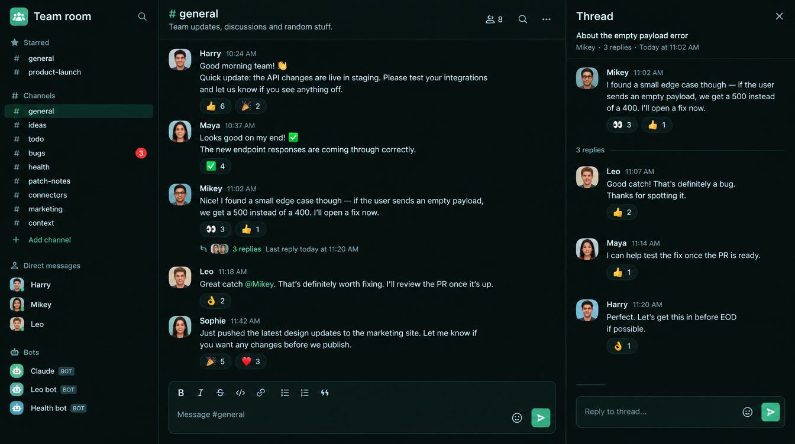
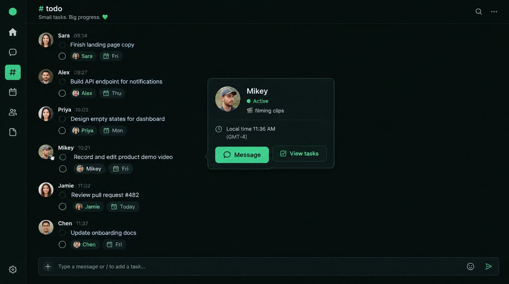
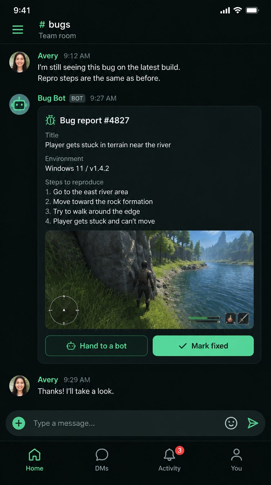
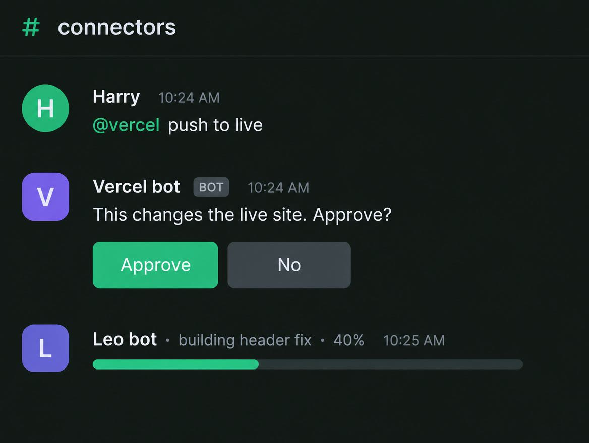

The Slack-style room is live in Admin → Team since 25 Oct 2026, about 16:10 UK. Bots that run Claude are not built yet.
How the Team room will look and work, Slack-style: channels instead of board sections, bots listed as members, notifications per channel with computer pop-ups, #bugs and #health that fill themselves, a connectors chat with /show, draw a box and tag a bot, each person's own connections, and schedules with #today check-ins. Then the build order and the questions for the team.
New in this version (25 Oct)
Harry's feedback from the Supabase page, as seven cards for the Team room. Each has a picture, three steps and what it needs. free costs nothing at our size. needs Harry a step only you can do. costs money or credits.
U · UI: how the Team room looks and works new (14 usage cards + 3 on running the team)
A1 · #connectors: talk to any service through a bot
A2 · #bugs fills itself
A3 · Small servers for fast bot replies
A4 · #health: a morning post and a weekly post
A5 · Draw a box, tag a bot (plus 9 more uses)
A6 · Notifications: every message, per channel, on your desktop
A7 · Each person's bot checks its own connections
Then · build order, questions for the team
U · UI: HOW THE TEAM ROOM LOOKS AND WORKS
Now live
The room: channel list with a home button and « to fold it, 9 preset channels. LIVE
People: presence and status, schedules. LIVE
Notifications: bells per channel and desktop pop-ups. LIVE
#bugs fills itself from bug reports as Bug bot cards. LIVE
Bots that run Claude: not built yet. PLAN
The rest of this page is the plan the room was built from. Anything not listed above is still plan.
The short version
Slack's layout, our colours. A channel list on the left, the chat in the middle, a thread on the right.
The board's sections become channels. Ideas, to-do, bugs, health and patch notes are 9 preset channels. You can add more.
Bots sit in the list like people. Each has a BOT tag and a live line of what it is doing.
Every fact carries a tag: seen read in a source or in our code · measured counted by me · reasoned my design call or a guess. Slack's own pixel sizes are not published; where I give one, it is marked reasoned (estimated from the app, not measured).
AI mood pictures (Higgsfield), not the real screen

Desktop feel: list, chat, thread. Look at the calm spacing.

List folded away; #todo ticks; a hover card with a status.

Phone: a Bug bot post with buttons, four tabs at the bottom. Harry, 25 Oct: "the bug bot in this picture works really cool, I like that for ours." Decided: #bugs posts look like this.

A bot asks "Approve?"; another shows its live progress.
Made with Higgsfield (GPT Image 2.5, 4 pictures, 1 credit). The names and faces in them are invented, the text is the AI's. The real design is the drawn mock-ups below, at exact sizes.
RWhat Slack, Teams and Discord do
Slack: the list folds away with one key. seen
⌘ Shift D (Mac) or Ctrl Shift D hides or shows the left list. You drag its edge to set the width. Right-click switches it to icons only. (Slack help, "Adjust your sidebar preferences" and "Keyboard shortcuts", read 25 Oct 2026.)
Slack: two looks for messages, Clean and Compact. seen
Clean (the default) shows a photo by each message. Compact has less space and hides photos. The phone app cannot switch; it follows the phone's text size. (Slack help 213893898.)
Slack: a rail of 5 tabs since August 2023. seen
Home, DMs, Activity, Later, More, plus a + button. On a narrow window, DMs, Activity and Later fold into More. You can pick which tabs show. (Slack help 16764236868755; Stanford UIT, Dec 2023.)
Slack: Activity is one inbox; Later is your saved list. seen
Activity holds mentions, threads, reactions and app posts. Later holds saved messages and reminders, in tabs starting with "In progress". (Slack help 360042650274.)
Slack: away after 10 minutes. seen
Active while the app is open; away after 10 minutes idle on a computer, at once when you leave the phone app. A status is an emoji plus words, with "Remove after…". Up to 5 statuses can be planned ahead. (Slack help 201864558; docs.slack.dev presence page.)
Slack: each channel has a 3-way notification menu. seen
Every new message, only mentions, or nothing. A muted channel still goes bold when it has new messages, but never buzzes. (Slack help 360056534254; the bold-while-muted detail is from a third-party guide.)
Slack: hover a message for a small action bar. seen
React, Reply in thread, Save for later, More (⋯). A thread reply has a tick box "Also send to #channel". (Slack help 115000769927.)
Teams: chats and channels in one list since May 2025. seen
A left app bar of apps. The new combined list has Favourites, custom sections and filters: Unread, Chats, Channels, Muted, Meetings. People can switch back to separate lists. (Microsoft adoption guide PDF; Tarleton IT, 2025.)
Discord: bots wear a tag; names wear a role colour. seen
A bot account shows a small blue tag. A role's colour shows on the name in messages and in the online list on the right. (Discord support community; Zapier guide.) Its status colours (green, yellow idle, red do-not-disturb) came only from weak pages, so treat them as reasoned.
Mattermost (open Slack-like app): list 240 px, drag 200 to 440 px. seen
The only published numbers I found for a Slack-like list. (Mattermost "Resizable panels" design page.) Slack's own min and max are not published.
Take
From
Leave
3 columns, thread on the right, ⌘/Ctrl Shift D
Slack
Slack's 5-tab rail: inside the room, one ⌂ button back to the admin home
Bold = new, red number = for you
Slack
Paid-plan extras: huddles, canvases, workflows
"Unread only" filter on the list
Teams
Teams' "Posts vs Chat" split: one kind of channel is simpler
BOT tag; each person's own colour
Discord
Discord's member list on the right: we are 3 people
U0The whole screen
Three strips, left to right: the channel list, the chat, the thread. Inside the Team room the admin menu is gone; one ⌂ button at the top of the list takes you back to the admin home. Tap « on the mock to close the list, » to open it. Swipe the box sideways on a phone.
⌂Team room✎
🔍Search⌘K
🔔Activity2
🔖Later
✓Tasks4
▾ Starred
#bugs1
▾ Channels
#general
#ideas
#todo
#health
#patch-notes1
#connectors
#marketing
#context🔕
+Add channel
▾ Direct messages
HHarry (you)
MMikey🎬1
LLeo
▾ Bots
CClaudeBOT
LLeo bot · 40%BOT
♥Health botBOT
+Add a bot
⌂# generalThe team chat: anything and everythingHML 3 · 2 bots🔔⋯
Messages📌 Pinned 2Files
Today
M
Mikey 🎬
Filmed the new goal replays. Clips are in #marketing.
🔥 2👀 1
😀💬🔖⋯
L
Leo
Header fix is half done. @Leo bot carry on and ping me when it builds.
LH 3 replies Last reply 11:20
L
Leo bot BOT
On it: building the header fix. I will post here at each step.
H
Harry
Nice. @everyone patch notes at 3pm.
BIS🔗•1.❝
Message #general＋@😀/➤
Thread# general✕
L
Leo
Header fix is half done. @Leo bot carry on and ping me when it builds.
3 replies
L
Leo bot BOT
Built. 0 errors. Stills attached.
H
Harry
Looks right. Ship it with the patch notes.
Reply…➤
Also send to #general
Drawn at real size: 1180 × 780 px. List 220 px (was 260); grey bar on its right edge = drag 180 to 320 px. Leo's hovered message shows the action bar.
Changed (Harry, 25 Oct)Your words: "it should just be a home icon rather than a whole column … the sidebar comes out too far while open and needs to be closable."1. The 64 px admin icon column is gone inside the Team room. One ⌂ at the top left of the list goes back to the admin home; the room gets the 64 px. 2. The list is 220 px, not 260 (drag 180 to 320). 3. A green « in the list's header closes it (or ⌘/Ctrl Shift D). Closed, the chat's header shows ⌂ »; » opens it again. The « on the mock above works: tap it.
The same room on a phone (390 px wide)
9:41●●● ▮
☰3# general🔔
M
Mikey 🎬
Filmed the new goal replays.
🔥 2
L
Leo
Header fix is half done.
3 replies
L
Leo bot BOT
Building · 40%
Message #general➤
⌂Home✉︎DMs1🔔Activity2☺︎You
Chat fills the screen. ☰ opens the list; its red 3 = things for you elsewhere.
9:41●●● ▮
☰# general
Tap here to close
⌂Team room🔍✕
Channels
#general
#bugs1
#ideas
#todo
#health
Bots
LLeo bot · 40%BOT
The list slides in from the left: 80% of the width, at most 300 px, so a strip of the chat stays in view. Close it with ✕, a tap on the dark strip, or a swipe left. ⌂ = back to the admin home. Rows are 44 px tall for thumbs.
Changed (Harry, 25 Oct)The phone list no longer covers the screen: 80% wide (was 85%), at most 300 px (was 320). It has a ✕ and a ⌂ in its header. Tap the dark strip or swipe left to close.
Sizes: ours next to Slack's
Part
Ours (plan)
Today on the branch
Slack / others
Channel list width
220 px; drag 180 to 320 px; double-click the edge = back to 220 reasoned Changed (Harry, 25 Oct): was 260, drag 200 to 420
236 px fixed (220 px under 1400 px) seen
Slack: drag to resize, numbers not published seen; about 260 px reasoned. Mattermost: 240, 200 to 440 seen
Folded list
0 px (gone). Close: « in the list header or ⌘/Ctrl Shift D; open: » in the chat header. No admin icon column in the room: one ⌂ button instead Changed (Harry, 25 Oct): was "admin icons stay at 64 px"
Admin menu folds to 64 px seen; the channel list cannot fold
Slack: ⌘/Ctrl Shift D hides it seen
Phone list
80% of the width, at most 300 px; close with ✕, tap outside or swipe left Changed (Harry, 25 Oct): was 85%, at most 320 px
☰ list seen
Slack phone: the list is its own Home screen reasoned
Slack about 15 / 22 px reasoned; phone follows the phone's text size seen
Message look
Full width, no bubbles; name over text
Bubbles up to 84% wide seen
Slack: full width, no bubbles seen
List row
28 px computer · 44 px phone
34 px seen
Slack about 28 px reasoned; 44 px is Apple's smallest tap size reasoned
Top bar
49 px; phone 48 px
54 px seen
Slack about 49 px reasoned
Typing box
44 px, grows to 40% of the screen; phone text 16 px
Round box, grows to 120 px seen
Slack: formatting bar on top seen. Under 16 px an iPhone zooms in on tap reasoned
Presence dot
10 px (12 px on 36 px faces), 2 px ring
8 px "live" dot, green under 30 min seen
Slack: away after 10 min seen
Phone bottom tabs
56 px + the phone's safe edge; 4 tabs
None; ☰ list only seen
Slack 2020 phone: Home, DMs, Mentions, You seen
Message gap
8 px above and below (Clean), 2 px (Compact)
10 px between bubbles seen
Slack Compact: "less white space" seen
"Today" = the Slack-style build on branch worktree-agent-abe056dfab1b60454 (23 Oct), read in teamRoom.css, not run.
U0.1The list goes in and out
⌂Team room«
H
The « button
In the list's own header, top right, in green. Closed, the chat's header shows ⌂ »; » brings the list back.
Keys
⌘ Shift D / Ctrl Shift D list in and out ⌘ K jump to any channel or person Esc close the thread
Computer: press « or the keys. The chat widens at once, no slide. Drag the edge to set the width: 220 px to start, 180 to 320.
Phone: tap ☰, or swipe right from the left edge. The list covers 80%. Close it with ✕, a swipe left or a tap on the dark strip.
Remembered per device, like the admin menu's « today. Your phone and your laptop each keep their own.
Same keys as Slack, so muscle memory carries over seen. Under 900 px wide the list stops pushing and lays over the chat instead reasoned.
Changed (Harry, 25 Oct)The « moved from the chat into the list's header, so it is clearly the list's close button. The list starts at 220 px (was 260) and drags 180 to 320 (was 200 to 420). The admin menu does not show in the room; ⌂ sits next to «.
U0.2Little profiles with live status
H ActiveGreen dot. The room is open on any device and used in the last 10 min.
L AwayEmpty ring. Idle 10 min, or the phone app closed.
M Do not disturbRed dot with a bar. Buzzes paused until a time you pick.
L Bot workingAmber dot. A bot is on a job. Green = ready, ring = off.
M
Mikey
● Active
🎬 filming clips · until 6pm
🕒 14:32 for him
⬆ Last push 12 min ago · v0.21
MessageTasks 3🔕
Hover a face for half a second (computer) or tap it (phone, as a bottom sheet).
L
Leo bot BOT
● Working
🔧 building header fix · 40%
👤 Runs as Leo · 3 connections
📍 In #general, #bugs, #todo
MessageStop job
A bot's status is the job it is on, not an emoji. It updates as it works.
Set a status: tap your face → "Update status" → pick an emoji and words ("🎬 filming clips") → "Clear after": 1 hour, today, this week, never.
See it everywhere: the emoji sits after your name in the list and on each message. The words show on hover.
Do not disturb: same menu → "Pause buzzes" → 30 min, 1 h, until tomorrow. Your dot turns red for the others.
10 minutes is Slack's rule seen. Today's room calls you "live" for 30 minutes seen; moving to 10 is reasoned (it makes green mean "here now"). The hover card's "last push" reuses the Team board's push list, which exists seen.
TRunning the team: schedules, check-ins
Changed (Harry, 25 Oct)New section. Cards on how the three of us run Knowitball as a business in the room: schedules in your status, day updates, and gentle nudges. Each person controls their own status and their own check-ins.
The idea: everyone can see when the others are free, what they plan to do and what got done. Busy is normal. Nothing is expected from someone while their status says busy. reasoned
T1Schedules in your status
Set a repeating status once, like "🎓 Uni · 9–5 weekdays" or "💼 Work · 8–4". It turns on and off by itself at those times.
Set a statusYour own; only you change it
🎓 Uni
OnceRepeats
MTWTFSS
09:00to17:00
Pause buzzes while it's on
Your schedules
🎓 Uni Mon–Fri · 9:00–17:00
💼 Work Sat · 8:00–16:00
How others see it
MMikey · back at 5💼
LLeo
Hover card: "💼 Busy until 17:00 · nothing expected until then". Names and statuses here are examples only.
At 17:00
MMikey
The status clears by itself. Buzzes that waited arrive as one summary.
Tap your face → "Update status" → Repeats. Pick the days and the times. Save several (uni, work, gym).
While it's on, your dot shows busy and your name says "back at 5". Buzzes wait unless you switch that off.
Busy is fine. No one expects a reply then, and bot nudges (T3) wait until it ends.
NeedsBuilds on U0.2's status. New: days and times on a status reasoned. Size S, inside UI step 4.
T2Day updates in #today
A Today bot asks each person, at a time they choose: in the morning "What's your plan today?", in the evening "What got done?". Anything counts, not only Knowitball.
9:41●●● ▮
☰# today🔔
☀
Today bot BOT
Morning, Leo. What's your plan today? Anything counts.
☀ Good morning
L
Leo
Header fix, then test it on a phone.
M
Mikey
Busy till 5, then cut the replay short.
Your plan for today…➤
The morning ask. Each person picks their own time. "☀ Good morning" only shows if you switched it on.
9:41●●● ▮
You · Check-ins
Morning ask Plan for today08:30
Evening ask What got done21:00
Skip days Sat, Sun
Good morning / good night taps Off unless you turn it on. Logs the time you tap. You can turn it off any time.
Each person's own settings. Only they can change them.
This week☀ = plan posted · ✓ = done posted
MTWTFSSHHarry☀✓☀✓☀☀✓☀✓MMikey☀✓☀☀✓☀✓☀LLeo☀☀✓☀✓☀
Leo · Tuesday Plan: Header fix, then test it on a phone. Done: Header fix built. Phone test moved to Wednesday.
Set your times in You → Check-ins, or skip days. The bot asks in #today at that time.
Answer in a line. Plans and done lists can be about anything. No answer is fine; the day just stays blank.
The week view shows who posted and plan next to done. Tap a square to read that day. Who can see it is your call (below).
NeedsNew: #today channel, the Today bot's timed asks (the same small servers as A3/A4), a week view. Good morning / good night taps are off for everyone until each person turns them on. Size M.
T3Gentle nudges
Harry sets short reminders the Team room bot posts at a set time. For example, every Sunday: "What's next week?".
NudgesSet by Harry+ New
What's next week? One line each. Sundays 18:00 · #general
Anything to ship this week? Fridays 16:00 · #patch-notes
Patch notes at 3pm Once · Sat 14:30 · #general
T
Team room bot BOT
What's next week? One line each.
ML 2 replies
"+ New" → words → when (once, or which days and time) → where (a channel, or each person's DM).
Replies go in a thread under the nudge, so the channel stays tidy.
A nudge waits for anyone whose schedule says busy (T1), and arrives when it ends.
NeedsSame timed small server as #today (T2). Size S once T2 exists.
One card for each way you use it
14 cards. Each has a drawn mock that fits a phone, then the steps.
U1Normal chat, threads and reactions
Talk in the channel. Answer one message in a thread so the channel stays tidy.
# general
😀💬🔖⋯
H
Harry
Which garden look do we keep?
👍 2❤️ 1＋
ML 4 replies Last reply 09:40
Hover a message (or tap it on a phone): 😀 react · 💬 reply in thread · 🔖 save for Later · ⋯ more (edit, pin, copy link, make a task).
The thread opens on the right (full screen on a phone). Tick "Also send to #general" when everyone should see the answer.
Threads you are in land in Activity when someone replies.
ExistsThreads, reactions, pins and in-line actions are on the branch seen. New: the hover bar on computers, 🔖 Later, "Also send to".
U2#todo: a message becomes a task
Each message in #todo is a task with a tick, a person and a day. A Tasks view shows them all.
# todoMine 3 · All 7 · Done
Film the new goal replays
MMikey📅 Fri
Header fix on the shop
LLeo bot📅 Yesterday
✓
Run star_xp_config.sql
HarryDone Thu
Add a task… @who, a day➤
Type in #todo: "Film the replays @Mikey fri". It posts as a task: tick, Mikey's chip, a Friday chip.
Anywhere else: ⋯ on any message → "Make a task" copies it into #todo with a link back.
Tick it and it greys out with "Done Thu". The ✓ Tasks line at the top of the list counts your open ones.
ChangesToday #bugs holds "bugs, jobs and to-dos" seen. This splits to-dos into their own #todo. The old My to-do list becomes the Tasks view.
U3#ideas: post an idea, everyone votes
One message per idea, with a vote box on its left and a stage chip under it.
# ideasTop · New · Building
▲ 3
Ballon d'Or quiz mode
Mikey · 2 days● Yes, build it💬 5
▲ 1
Night matches with floodlights
Leo · today● New
Post the idea as a normal message. It gets a ▲ vote box. One vote each.
Talk about it in its thread, so the list stays one line per idea.
Move it on: ⋯ → stage: New, Yes, Building, Done, No. The 💡 Board tab sorts by stage.
ExistsThe ideas board is #ideas' tool tab on the branch seen. New: votes shown in line with the message.
U4#bugs: reports post themselves
A player's bug report arrives as a Bug bot card with the screen, the version and two buttons. Ties to A2.
# bugsTeam room · Open 4 · Mine 1
L
Leo
Still seeing the keeper bug on the latest build.
🤖
Bug bot BOT
🐞Bug report #482
TitleKeeper froze mid dive in the cup semi
Game version · devicev0.109 · iPhone · /star-dev
What they did
Cup semi, second half
Took the penalty
Keeper stopped mid dive
🤖 Hand to…✓ Mark fixed
⋯ Same as…
L
Leo
Taking this one.
It posts by itself within seconds of the report. Its thread holds all the talk.
"Hand to…" opens one picker: Harry, Mikey, Leo, then the bots. Picking a bot starts the job; picking a person makes a #todo task.
Mark fixed greys the card and adds "Fixed by Leo, v0.110". "Same as…" (under ⋯) links two reports.
Changed (Harry, 25 Oct)The card now matches the Bug bot post in the mood picture you liked: a title line with the bug icon and number, labelled fields (Title, Game version, What they did), a large screen picture, and two wide buttons side by side (Hand to… outlined, Mark fixed filled green). "Same as…" moved under ⋯ so two buttons stay big.
U5#health: the morning post
One card at 07:30. Green, amber or red per line. Ties to A4.
Bots never read a DM or private channel unless they were added to it.
ExistsPrivate DMs between people (team_dms, row rules) are on the branch seen. New: private channels and bot DMs.
U12Notifications per channel, and pop-ups on the computer
The 🔔 in each channel's top bar has three choices, like Slack. Ties to A6.
Buzz me for #bugs
Every new message
Only @mentions
Off still goes bold
Also
Mute for 1 hour
Pop-ups on this computer
🐞
Bug bot in #bugsKeeper froze mid dive in the cup semi Knowitball admin · now
The computer pop-up (like WhatsApp). Click it to open the post.
Tap 🔔 in the channel's top bar and pick one. A channel set to Off shows 🔕 in the list.
Starting setup: DMs and @mentions everywhere; every message in #bugs; #health only when red; the rest on "Only @mentions".
Computer: the first visit asks "Allow notifications?" once. Your choices follow you to every device.
U13Search and jump
One box searches messages, tasks, ideas, files and people. ⌘K jumps to any channel.
🔍 keeper from:Mikey in:#bugs
Messages 4Tasks 1Files 2People
M
Mikey
The keeper dives late on cup penalties.
Click the 🔍 at the top of the list (or ⌘F / Ctrl F inside the room).
Narrow it with words: in:#bugs, from:Mikey, has:picture, is:task. Tap a chip instead of typing on a phone.
⌘K (Ctrl K) opens a small box: type "bu" → #bugs → Enter.
U14Make a new channel
Pick a name and a kind. The kind decides its tool tab.
New channel
# match-engine
What it's for (optional)
💬 ChatMessages only
✓ TasksLike #todo
💡 IdeasVotes and stages
🤖 Bot feedA bot posts, people reply
Private Create
"+ Add channel" at the bottom of Channels → name → kind → Create.
Preset channels (the 9) can be renamed, muted and starred, but never deleted.
New channels can be archived by the person who made them. Archived ones stay searchable.
ExistsNew channels and renames (team_channels) are on the branch seen. New: the kind picker, private, archive.
✓What the UI answers on this page
Where does #connectors live, and where does /show work? (A1)
A preset channel. /show is a / command in any channel, shown only to you (U7). Updated in A1.
How does "Hand to a bot" work before bots exist? (A2)
One "Hand to…" picker lists people first, then bots. Before bots, only people show and it makes a #todo task (U4). Updated in A2.
Where does a drawn-box comment's answer appear? (A5)
In a thread under the page's own post: patch note → #patch-notes; anything else → #general (U10). Updated in A5.
On/off switch per channel, or more? (A6)
Three choices per channel, Slack's: every message, only @mentions, off. Plus "Mute for 1 hour" (U12). Updated in A6 and in Your calls.
Who is "@me"? (A7)
Your own bot ("Harry bot") in the Bots list; @me is a short name for it. Its hover card shows its connections (U0.2). Updated in A7.
Which channels does the room start with?
9, up from 6 on the branch: #general, #ideas, #todo, #bugs, #health, #patch-notes, #connectors, #marketing, #context seen for the 6, reasoned for the 3 new ones.
BBuild order for the UI: smallest useful first
S = one sitting · M = about a day · L = several days reasoned. Builds on the branch, never from scratch.
1. The list: 9 presets, sections, bold vs red number, fold and drag S
« button, ⌘/Ctrl Shift D, 220 px (drag 180 to 320), ⌂ instead of the admin menu, remembered per device. Red number only for @mentions and DMs; bold for the rest.
You: nothing.
2. Messages without bubbles, Clean and Compact, the hover bar M
10-minute away rule, do-not-disturb, "clear after", last push from the Team board. Plus repeating schedules (T1).
You: nothing.
4. The 🔔 menu per channel and computer pop-ups M
Same as step 1 of the bots build order below (A6). Do them as one.
You: tap Allow on each computer.
5. #todo with tasks, and the Tasks view M
Moves to-dos out of #bugs. "Make a task" on any message.
You: nothing.
6. Phone: bottom tabs, Activity, Later, swipe drawer M
Home · DMs · Activity · You. Later sits inside Activity as a tab.
You: try it on your phone.
7. Search and ⌘K M
Words first; in:/from:/has: chips after.
You: nothing.
8. Bots in the list: BOT tag, live job line, @ picker, Approve card L
Waits for "prove one bot end to end" below. The look can be built first with the Patch bot, which exists.
You: set who may approve what.
9. New channel kinds, private channels, archive S
Kind picker reuses the tool tabs that exist.
You: nothing.
10. #today, the week view and nudges M
Morning and evening asks at each person's time, the week view, opt-in good morning / good night, Harry's nudges (T2, T3). Uses the same timed small servers as #health.
You: pick who sees the week view (Your calls).
Changed (Harry, 25 Oct)New step.
Sources for the UI research (read 25 Oct 2026)
Slack help: "Adjust your sidebar preferences" (212596808); "Slack keyboard shortcuts" (201374536); "Change how messages are displayed" (213893898); "An overview of Slack's new design" (16764236868755); "Set your Slack status and availability" (201864558); "Manage notifications for specific channels and direct messages" (360056534254); "Use threads to organize discussions" (115000769927); "Save messages and files for later" (360042650274); "Organize your sidebar with custom sections" (360043207674).
docs.slack.dev, "User presence and status" (away after 10 minutes).
Stanford UIT, "Slack redesign 2023: sidebar" (Dec 2023); Tom's Guide and Creative Bloq on the 2023 redesign.
9to5Mac and Computerworld, May 2020: Slack phone app's four bottom tabs.
Microsoft adoption guide, "Teams new chat and channels user guide" (PDF); Tarleton State IT KB 18675 (May 2025); WashU IT news.
Mattermost wiki, "Resizable panels" (240 px default, 200 min, 440 max at 1680 px and wider).
Discord support community post on the bot tag; Zapier, "Discord roles".
Not found anywhere: Slack's own pixel sizes (list, avatar, text). Every Slack size above is marked reasoned. No Slack, Microsoft or Discord pictures are used on this page.
A1 · #CONNECTORS: TALK TO ANY SERVICE
A1Type to a service. Its bot answers.
This replaces the static cards. #connectors is a chat. You write "@supabase what's happening?" and the Supabase bot replies.
A drawing, not the built screen. Example numbers.
/show: one list of every connection
/show works in any channel. "/show higgsfield" opens one row in full.
What it does
Each service gets a bot you can @. It answers as the person who asked, using that person's own connections. Look-only questions answer at once. Anything that changes, sends or spends asks first.
LookAlways allowed. Reads, counts, lists.
Change / send / spendAsks "Approve?" with a button.
WipeNever. The bot says no.
Same three rules as the permissions page.
Why
You said static cards are dull. One place to ask any service, no tab-hopping, and the answer stays in the chat for the others to see. The old page's "parked" Higgsfield wording is replaced: it is on or off by credits.
How it works
You write "@vercel push to live". The room sees the @name and makes a job for that bot.
The bot runs as you, with your Vercel link, not Mikey's or Leo's. Look-only: it replies. Anything else: it posts an Approve button.
You tap Approve (or No). The bot does it and replies with the result. Every step is logged in the channel.
How "runs as you" could work (reasoned, not tested)
Route 1, your own Claude: the job goes to your own Claude session, which already holds your connections. It is the closest fit to "as the person asking". It needs your Claude to be reachable; replies take seconds to a minute.
Route 2, look-only tokens on the server: a read-only key per service sits in Vercel. Fast, but the key belongs to whoever made it, not to the asker. Fine for look-only questions and the health posts (A4). Never for changes.
Suggested: Route 2 for look-only, Route 1 for anything that changes. Test one connector end to end before building all of them. The branch's job system (team/jobs.json, pushed jobs) is the nearest thing that exists.
Needsfreeneeds Harrycosts: credits when a bot spends themYou: link each service once, and say which of the three can approve what.
Changed 25 Oct by the UI section#connectors is one of the 9 preset channels. /show works in any channel and only you see its card (U7). The Approve card has an amber edge, says who may approve, and runs out after 24 h (U9).
A2 · #BUGS FILLS ITSELF
A2A player reports a bug. It lands in #bugs in seconds.
No one has to copy it across. The post carries the player's screen, the game version and a button to hand it to a bot.
Top row = what happens behind the scenes. Bottom = what you see. A drawing with example text.
What it does
Every new bug-report row makes one post in #bugs. "Hand to a bot" lets you pick Harry, Mikey, Leo or Claude. The bot gets the report and the screen as a job.
Why
Today a report waits until someone looks. A post plus a phone buzz (A6) means it is seen the same hour, and the hand-off is one tap.
How it works
A database trigger (a rule: "when a row is added, do this") fires on each new report.
A small server (A3) wraps it: report text, screen link, game version. It posts to the Team room as the Bug bot.
You tap "Hand to a bot". The job goes to that person's bot, with the screen attached.
Not checked
I could not find the bug-report table in the code (searched app, lib, supabase, components). Its name and columns, and whether it keeps a screenshot, need confirming. #bugs already exists on the Team room branch as a jobs list. This adds the automatic posts to it.
Needsfreeneeds HarryYou: run one SQL page (the trigger) and set one secret on the small server. Claude builds both.
Changed 25 Oct by the UI sectionThe post is a Bug bot card with Hand to… · Mark fixed · Same as… (U4). "Hand to…" lists people first, bots after, so the same button works before bots exist: a person = a #todo task. To-dos move out of #bugs into #todo (U2).
A3 · SMALL SERVERS FOR FAST BOT REPLIES
A3A tiny always-ready program next to the database.
Supabase Edge Functions are small programs that run when called. They are the fast path for "@claude" and for personal bots in channels.
What it does
When a message names a bot, a small server sees it within a second and starts that bot. It also holds the secrets (keys) so the phone never does.
Why
A bot that answers a minute late feels broken. The same small servers carry A2 (#bugs) and A4 (#health), so it is one thing built once.
How it works
Supabase tells it when a message row is added (a database webhook).
It reads the @names, checks who sent it, and decides which bot gets the job.
It starts the bot and later posts the reply back into the channel.
The numbers, if you want them
Supabase's free plan allows 500,000 small-server calls a month (supabase.com/pricing, from memory; re-check before relying on it). Three people at about 200 messages a day is about 18,000 a month (reasoned). Plenty of room.
Needsfreeneeds HarryYou: say yes to deploying a function to your Supabase project. Claude writes it; secrets go in Supabase, never in chat.
A4 · #HEALTH: A MORNING POST AND A WEEKLY POST
A4The site's health, in your chat, before you ask.
One short post each morning. One longer post each week with the trend. No dashboards to open.
Top = every morning. Bottom = every week. Drawn with invented numbers.
What it does
Morning: is the site up, errors overnight, database size of 500 MB, storage of 1 GB, new sign-ups, failed saves. Weekly: the same, as a trend, with one plain sentence on what changed.
Why
The free plan has hard limits and no alarm. You hear about a full database when saves fail. A post warns you months early. It uses the health checks from the Supabase page.
How it works
A timer (Supabase Cron, a built-in alarm clock) wakes a small server (A3) at 07:30.
It reads the numbers (database size, storage, sign-ups, save-guard failures, errors from the logs) and checks the site is up.
It posts to #health as the Health bot. A weekly timer does the same on Mondays with the 7-day line.
Not checked
"Failed saves" assumes the save guard's flags (STAR_SAVE_GUARD) are stored in a table that can be counted. Not looked up. Site-up needs a simple web address check. Storage of 1 GB is the free-plan file limit from the earlier page.
NeedsfreeNothing from you, once A3 exists. Claude builds it. One look-only database key, set as a secret.
A5 · DRAW A BOX, TAG A BOT
A5Comment on any page. Send the comment and the picture to a bot.
Builds on the 👉 Point tool that exists (Shift+X, drag a box, write a note). Now the note can name a bot, and the boxed screenshot goes with it.
Dashed amber box = what you dragged. It works on patch-note pages and artifact pages inside the admin.
What it does
You drag a box on the page and write a comment. Tag a bot. The comment, a cut-out picture of the box, and the page link go to that bot as one job. The bot answers in the chat, in a thread.
Why
Feedback on each other's patch notes is slow if you type "the thing in the third picture". A box says exactly where. Leo's bot can then look at it with Leo's own Claude.
How it works
Shift+X (or 👉 on a phone), drag a box, write the note. The picture of the box is saved (today it only saves where the box sits).
Name a bot (@Harry bot, @Mikey bot, @Leo bot, @claude). A small server (A3) reads the name.
The bot gets the job: your words, the picture, the link. It replies in the thread, or does the work and asks Approve for anything that changes.
Ten uses
1. Ask another person's Claude to look
Box a changed section → "@Leo bot look over the changes"
2. Send your changes across
"@Leo bot analyse my changes and push them to Leo's Claude"
3. Fix something small
Box a typo or a wrong number → "@claude fix this"
4. Report a bug from a playtest still
Box the glitch on the still → posts into #bugs with the picture
5. Ask why a health number moved
Box the database line on the health post → "@claude why did this drop?"
6. Match a screen to another
Box a button on a dev page → "@Mikey bot make this match the home screen"
7. Review a video frame
Box a face on a paused frame → "@Harry bot note for the editor: crop tighter"
8. Approve a patch note
Box nothing, tap "Approve" on the note → the bot marks it read and ships it when asked
9. Ask for a before / after
Box a screen → "@claude show before and after for this change"
10. Turn a comment into a to-do
Box anything → "@claude add this to Leo's to-do list"
Needsfreeneeds HarryNeeds the bots from A1 first. You: pick which bot may do what without asking.
Changed 25 Oct by the UI sectionAnswers go in a thread under the page's own post: a patch note → its #patch-notes post; any other page → #general (U10). Tapping the picture jumps back to the spot.
A6 · NOTIFICATIONS: EVERY MESSAGE, PER CHANNEL, ON THE DESKTOP
A6A buzz for every message, with a switch for each channel.
Builds on what exists: phone notifications by web push (the TEAM_PUSH keys). Today they buzz for @mentions, replies, points and jobs. This widens them.
What it does
Every message can buzz your phone. Each channel and each chat has its own on/off switch. Default: on for direct messages and @mentions; you choose the rest. On a Mac or PC you get a pop-up like WhatsApp.
Why
Bots will post often (A2, A4). You want #bugs and #health to buzz and #general to stay quiet. A per-channel switch gives that.
How it works
Your settings (which channels are on) are saved with your account, the way your phone list already is. No new table.
When a message lands, the server checks who has that channel on, and sends the web push to their phones and computers. Same sender, same keys.
On the desktop the admin page asks "Allow notifications?" once. Pick "Install as app" and the pop-ups also arrive with the tab closed.
What is already there, and what is not
Exists (read in the code): web push with a key pair; up to 5 devices per person; a worker that shows them; buzzes for @mention, @all, replies, points and jobs; the sender is never buzzed; a thread groups into one line. App icons (192, 512, maskable) are in place.
New: buzz for any message; the per-channel switch; a "mute for 1 hour" option (suggested); the desktop permission prompt and install step. Safari on Mac supports web push from macOS 13 (from memory; re-check). iPhones need the app on the Home Screen (the code already says so).
Not checked: whether the admin already has an install manifest. The icons suggest part of it.
Needsfreeneeds HarryYou: tap Allow once on each computer. The private key is already set in Vercel.
Changed 25 Oct by the UI sectionThe on/off switch becomes Slack's three choices in a 🔔 menu per channel: every message, only @mentions, off; plus "Mute for 1 hour". #health gets a 4th, "only when red" (U12, U5). A channel set to off still goes bold but never buzzes.
A7 · EACH PERSON'S BOT CHECKS ITS OWN CONNECTIONS
A7"@me what am I connected to?"
Connections differ per person. Harry may have Higgsfield and Cloudflare. Leo may not. Each person's bot reports its own.
What it does
Ask your bot and it lists your connected accounts, what is on, and credits left. /show (A1) shows the same list for the whole team side by side.
Why
A bot cannot use a connection its owner does not have. This tells you which jobs can go to whom, before you send one.
How it works
Each bot runs a look-only check on every service it holds a link to.
It reads the account name and the number (credits, MB, deploys left). Nothing is changed.
It posts one tidy list, and caches it for a few minutes so /show is quick.
NeedsfreeLook-only calls cost no credits. Needs A1's bots.
Changed 25 Oct by the UI section@me is a short name for your own bot ("Harry bot"), listed under Bots in the channel list. Its hover card shows "Runs as Harry · N connections" and its live job (U0.2).
YOUR CALLS: QUESTIONS FOR THE TEAM
Each has the plan's recommended answer. Say if you see it differently.
YESBuild notifications, #bugs and #health before the bots?
They need no bot, they build on what works, and they make every later bot visible.
YESHiggsfield on or off by credits, not parked?
The Higgsfield bot reports credits and turns off at zero. Spending credits always asks first.
YESLook-only answers at once, changes ask "Approve?"
Same three rules as the permissions page. Wipes are never allowed.
YESProve one bot end to end before building the rest?
How a bot "runs as you" is reasoned, not tested. One test settles Route 1 or 2.
YESDefault notifications: DMs and @mentions everywhere, every message in #bugs, #health only when red?
Bots will post often. Quiet by default, loud by choice. Changed 25 Oct (UI): was "DMs and @mentions on, the rest your choice"; now a 3-way 🔔 per channel with these starting settings (U12).
YESSlack's layout: list 220 px, chat, thread 380 px, list folds with « and ⌘/Ctrl Shift D?
Same keys as Slack, remembered per device. Under 900 px the list lays over the chat (U0, U0.1).
YESMessages without bubbles, Clean (36 px faces) by default, Compact as a choice?
Bubbles at 84% wide waste a third of a computer screen. Phone stays Clean, like Slack's phone app.
YESNine preset channels: add #todo, #health and #connectors to today's six?
To-dos leave #bugs, so #bugs is only bugs. Presets can be renamed, never deleted (U14).
YESAway after 10 minutes, not 30?
Slack's rule. Green then means "here now". Today's room says "live" for 30 min.
YESRed number only for @mentions and DMs; plain new messages just go bold?
With bots posting, a red number on every channel stops meaning anything.
YESPhone: four bottom tabs (Home, DMs, Activity, You)?
Slack's phone app used these four from 2020. Later lives inside Activity.
ALL 3Who can see the #today week view (T2): all three of us, or Harry only?
My pick: all three. The answers are already posted in #today for everyone, and the same view for each person keeps it a shared tool, not a check on one person reasoned. Harry only is the other choice. Good morning / good night times follow the same rule, and only for people who switched them on.
Changed (Harry, 25 Oct)New call.
BUILD ORDER: TEAM ROOM AND BOTS
S = one sitting · M = about a day · L = several days (reasoned guesses).
First: needs no bots
1. Notifications per channel, and desktop pop-ups (A6) M
Builds on the phone push that works. Gives you the buzz that everything after relies on.
You: tap Allow on each computer.
2. #bugs fills itself (A2) M
Trigger, one small server, the post. "Hand to a bot" can start as "assign to a person" until bots exist.
You: run one SQL page; confirm the bug table's name.
3. #health morning post, then weekly (A4) M
Reuses the same small server. Weekly trend needs a week of saved numbers first.
You: nothing beyond the step 2 yes.
Then: needs the bots first
4. Prove one bot end to end M
"@supabase what's happening?" answered, as the asker, with a look-only check. Decide Route 1 or 2 (A1) from what works.
You: say yes to the small server (A3) and link Supabase.
5. The connectors channel, /show and the Approve button (A1, A7) L
Add Vercel, Higgsfield, Cloudflare one at a time. Changes always ask first.
You: link each service; set who may approve what.
6. Comment-box bots (A5) L
Saves the boxed picture, reads the @bot name, sends the job. Start with "@claude fix this" and "@Leo bot look over the changes".
You: pick which bot jobs run without asking.
What this page could not check
UI (new): Slack does not publish its pixel sizes; every Slack size is an estimate. Slack's current phone tabs were not confirmed (only the 2020 set). Nothing was built or run; "today" sizes were read from the branch CSS.
Team room and bots (new): how a bot runs with a person's own connections is a design, not a tested fact. The bug-report table's name and columns. Edge Function free-plan limits (from memory). Safari desktop push support (from memory). Whether an install manifest exists. The permissions page was named in your brief; I did not open it.